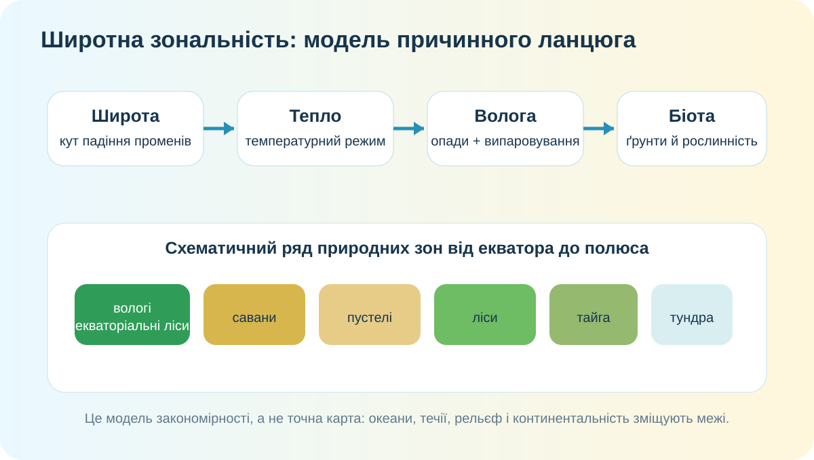
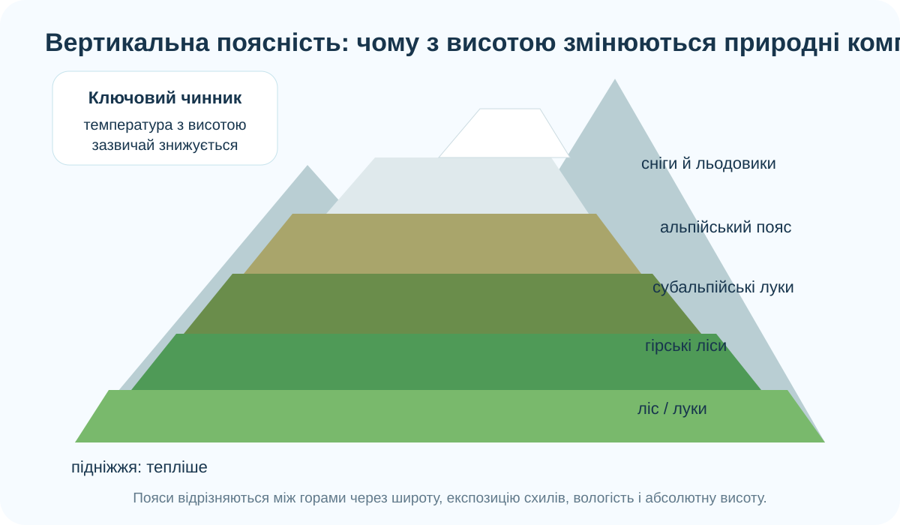

1. Дослідницьке питання
Чи можна передбачити тип природного комплексу, знаючи широту та висоту місцевості?
Побачити глобальну закономірність у супутникових даних.
Перевірити причинний ланцюг «тепло + волога → ґрунти й рослинність».
Перенести логіку з широти на висоту в горах.
2. Земля з космосу: де рослинність найгустіша?

NASA Scientific Visualization Studio, NDVI Seasonal Cycles. Зеленість розрахована за супутниковими даними й показує активність рослинності, а не адміністративні кордони.
Назвіть дві великі смуги/регіони з дуже високою зеленістю.
Знайдіть дві великі території з малою зеленістю. Чи лежать вони на однакових широтах?
Чому сама широта ще не гарантує однакову рослинність?
3. Реальна карта: порівняйте три широтні «експерименти»
На OpenStreetMap відкриються три регіони. Перемикайте масштаб і дивіться не лише на підписи, а й на положення щодо екватора, океану та гір.
4. Інтерактив: зберіть природну зону з умов
Оберіть комбінацію температури й зволоження — і модель покаже найімовірніший тип зони. Це спрощення: реальні межі залежать також від ґрунтів, океанів, течій і рельєфу.

5. Практична робота: «позначаємо» природні зони Землі
Контурну карту виконайте в зошиті/атласі. Тут — тренажер перед перенесенням на папір. Натискайте зони в правильній послідовності від екватора до Північного полюса.
Тренажер послідовності:
Позначте щонайменше: вологі екваторіальні ліси, савани й рідколісся, тропічні пустелі, степи/лісостепи, мішані й широколисті ліси, тайгу, тундру, арктичні пустелі. Межі беріть з атласу, не з цієї схеми.
6. З широти — у висоту: вертикальна поясність

У тропіках біля підніжжя гори може бути спекотно, а на вершині — постійний сніг.
З висотою температура повітря загалом знижується; змінюються також опади, ґрунти й тривалість вегетаційного сезону.
Природні комплекси змінюються поясами від підніжжя до вершини.
7. Другий супутниковий доказ: сезонність рослинності

NASA SVS / MODIS. Супутникові спостереження показують сезонний цикл рослинності, особливо виразний у середніх і високих широтах Північної півкулі.
8. Коротке відео: Земля «дихає» сезонами
NASA Scientific Visualization Studio, NDVI Seasonal Cycles. Якщо відео не завантажується у шкільній мережі: відкрити сторінку NASA.
9. Теорія — тепер формулюємо правило
Широтна зональність
Закономірна зміна природних комплексів від екватора до полюсів. Головна причина — широтна зміна надходження сонячної енергії, яка через температуру, циркуляцію атмосфери та зволоження впливає на ґрунти, рослинність і тваринний світ.
Вертикальна поясність
Закономірна зміна природних комплексів з висотою в горах. Її основа — зміна температури й зволоження з висотою; набір поясів залежить від широти, висоти гір та експозиції схилів.
10. CER — доведіть, а не повторіть
Твердження: «Широтна зональність і вертикальна поясність мають спільний механізм, але не є одним і тим самим явищем».
11. Домашнє завдання
Опрацюйте §16. Завершіть позначення природних зон на контурній карті та складіть 4-реченнєве пояснення: чому межі зон не збігаються ідеально з паралелями.
Створіть одну сторінку лепбуку/буклету «Природні зони Землі»: карта + 3 реальні фото + кліматичні ознаки + один доказ зв’язку з широтою.
12. Тест — 10 балів
Спочатку введіть дані учня. Тест відкриється тільки після заповнення всіх трьох полів.